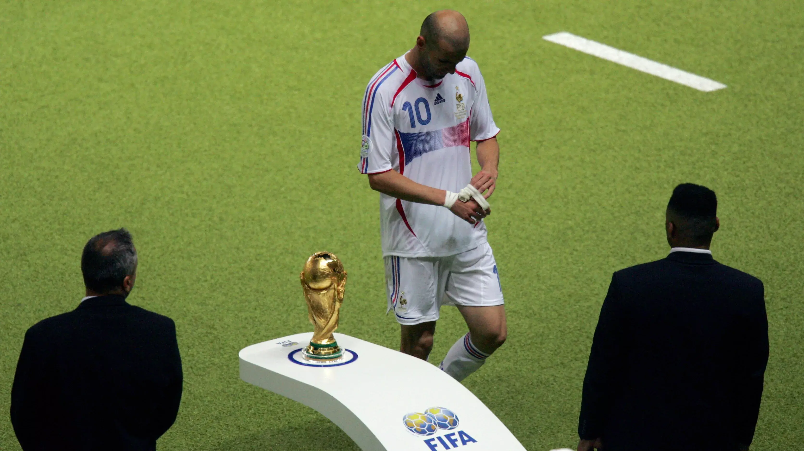

Bienvenidos a la Página Oficial de la FIFA World Cup!
En este sitio web usted encontrará toda la información relevante acerca de la Copa Mundial de Fútbol. Como por ejemplo selecciones campeonas, goleadores y estadísticas, resultados, datos curiosos y mucho mas!
¿Qué es?
Es un torneo de fútbol el cual se celebra cada 4 años, que reúne a las mejores selecciones del planeta y compiten por alcanzar la gloria mas grande, el trofeo de campeón del mundo. El próximo evento será en 2026, míralo tu mismo.
Próxima sede
El próximo torneo se llevará a cabo en 3 países: Estados Unidos, México y Canadá. El campeonato hará historia en el fútbol mundial y en la FIFA World Cup, ya que será el primer torneo de fútbol mundial organizado por 3 paises, y que tendrá tan solo...¡48 selecciones! que estarán peleando por el campeonato.
Aprendiendo desde el inicio...
La Copa del Mundo de la FIFA es el torneo de fútbol más prestigioso a nivel internacional, celebrado cada cuatro años desde su primera edición en 1930. Organizado por la Federación Internacional de Fútbol Asociación (FIFA), este evento reúne a las mejores selecciones nacionales del planeta en una competencia que despierta la pasión de millones de aficionados en todo el mundo. Con un formato que ha evolucionado con el tiempo, desde 8 equipos hasta el formato tradicional de 32 equipos.Actualmente participarán 48 equipos que se enfrentan en una fase de grupos antes de avanzar a las etapas eliminatorias, culminando en una gran final donde se corona al nuevo campeón del mundo. A lo largo de su historia, el torneo ha sido testigo de momentos icónicos, desde las hazañas de Pelé y Diego Maradona hasta el dominio de selecciones como Brasil, Alemania y Argentina. Además de la emoción en el campo, la Copa del Mundo también tiene un impacto cultural y económico significativo, convirtiéndose en un evento global que trasciende el deporte. Con cada edición, los aficionados esperan descubrir nuevas estrellas, presenciar partidos inolvidables y celebrar la pasión por el fútbol en estadios repletos de energía. En esta página encontrarás toda la información sobre el torneo, incluyendo partidos historicos, estadísticas, curiosidades y análisis de los equipos y jugadores que harán historia en esta nueva edición. ¡Acompáñanos y vive la emoción del Mundial como nunca antes!
El gol del siglo
Diego Armando Maradona en 1986, y un gol inolvidable

La otra mano de dios
Luis Suarez y una atajada espectacular para evitar la eliminacion de Uruguay en 2010
Formato actual
El torneo de la Copa del Mundo comienza con la fase de grupos, donde las 32 selecciones clasificadas se dividen en 8 grupos de 4 equipos cada uno. Durante esta etapa, cada equipo juega tres partidos enfrentándose una vez contra cada rival de su grupo en un formato de todos contra todos. Los partidos otorgan 3 puntos por victoria, 1 punto por empate y 0 puntos por derrota. Al finalizar esta fase, los dos mejores equipos de cada grupo, determinados por la cantidad de puntos obtenidos y, en caso de empate, por la diferencia de goles y otros criterios de desempate, avanzan a la fase final. A partir de los octavos de final, el torneo se convierte en una competencia de eliminación directa: los 16 equipos clasificados se enfrentan en duelos de un solo partido, donde el ganador avanza y el perdedor queda eliminado. En caso de empate tras los 90 minutos reglamentarios, se juegan dos tiempos extra de 15 minutos cada uno y, si la igualdad persiste, el partido se define mediante una tanda de penales. Esta dinámica se mantiene en los cuartos de final y las semifinales, hasta llegar a la gran final, donde los dos mejores equipos del torneo se enfrentan para disputar el título de campeón del mundo. Además, los equipos eliminados en semifinales juegan un partido adicional para definir el tercer puesto. Este formato garantiza emoción y competitividad en cada encuentro, brindando a los aficionados momentos inolvidables en la lucha por el trofeo más prestigioso del fútbol.